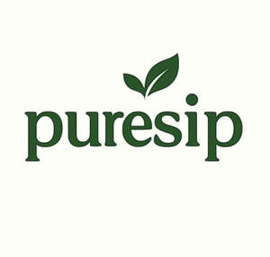

Trade Mark Journal No.2025/046 14 November 2025
UK00004291044 7 November 2025 (21)

- Class 21
- Insulated mugs; Coffee mugs; Insulated bottles [flasks]; Vacuum bottles [insulated flasks]; Vacuum mugs; Heat insulated containers for drinks; Insulated lunch bags; Insulated flasks; Thermal insulated wrap for cans to keep the contents cold or hot; Cups and mugs; Glass mugs; Insulating sleeve holder for beverage cups; Coffee cups; Insulated vacuum bottles; Mugs; Tea cups; Beer mugs; Vacuum flasks for holding drinks; Ceramic mugs; Insulating flasks; Sippy cups; Glass cups; Insulated flasks for household use; Glass flasks; Porcelain mugs; Mugs of porcelain; Drinking mugs made of porcelain; Tea kettles [non-electric]; Reusable plastic water bottles sold empty; Empty water bottles for bicycles; Drinking flasks; Vacuum bottles; Drinking bottles; Drinking bottles for sports; Bottles; Water bottles; Drinking glasses; Straws for drinking; Drinking straws; Glass bottles; Plastic water bottles; Water bottles for bicycles; Drinking flasks for travellers; Flasks for travellers (Drinking -); Beer glasses; Plastic bottles; Reusable bottles; Drinking cups [not of precious metal]; Reusable stainless steel water bottles; Aluminum water bottles; Aluminum water bottles, empty; Glass flasks [containers]; Milk jugs; Insulated containers for beverage cans, for domestic use; Coffee pots [non-electric]; Reusable stainless steel water bottles sold empty; Tea kettles, non-electric; Mugs made of plastic; Vacuum jugs (Non-electric -); Thermal insulated tote bags for food or beverages; Beverages (Heat insulated containers for -); Vacuum coffee bean containers; Bottle coolers; Thermal insulated containers for food or beverage; Thermal insulated bags for food or beverages; Thermal insulated containers for food or beverages; Heat insulated containers; Non-electric coffee pots; Non-electric coffee drippers for brewing coffee; Heat-insulated containers for beverages; Mug sleeves; Plastic water bottles [empty]; Thermally insulated flasks for household use; Portable beverage coolers; Drinks containers; Tea pots; Beer jugs; Coffee stirrers; Plastic cups; Vacuum jars; Vacuum flasks; Vacuum flasks for holding food; Plastic bowls [household containers]; Double heat insulated containers for food; Thermally insulated containers for food; Heat-insulated containers; Drinking cups; Drinking glass holders; Glasses [drinking vessels]; Wine jugs; Drinking flasks [for travellers]; Whisky glasses; Wine glasses; Water bottles sold empty; Pint glasses; Refrigerating bottles.
Desify Ltd